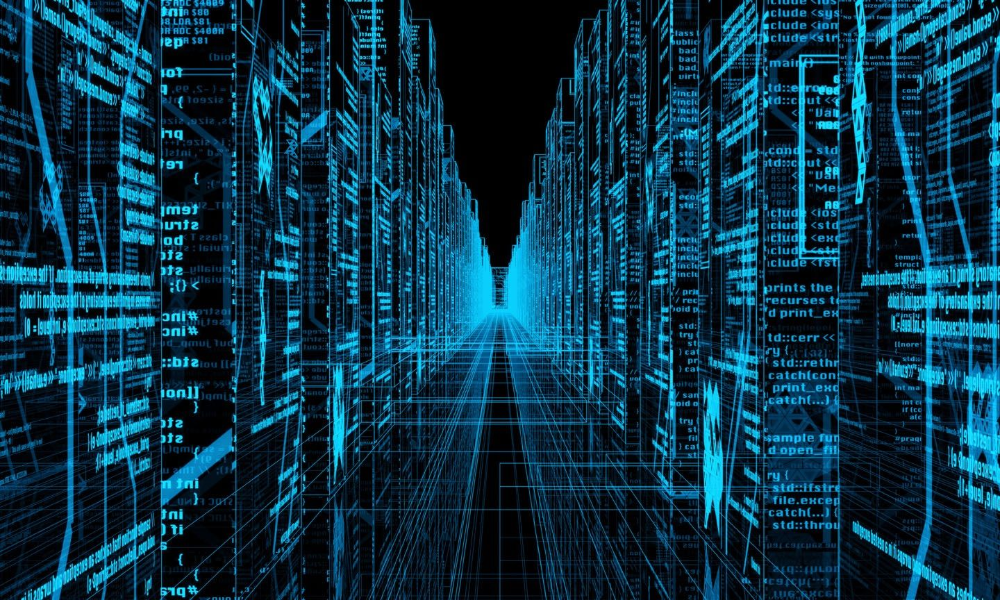
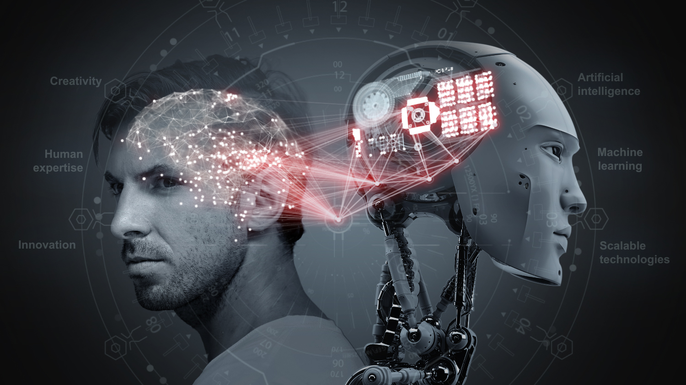

Глубокое обучение и большие данные: как они переопределяют будущее аналитики
С каждым годом объёмы данных, генерируемых человечеством, увеличиваются экспоненциально. Эти данные становятся ключевым ресурсом для компаний, стремящихся улучшить свои продукты и услуги. В центре этой революции находятся большие данные и глубокое обучение — две технологии, радикально меняющие ландшафт аналитики и принятия решений в бизнесе.
Сила больших данных
Большие данные представляют собой массивы информации, слишком великие или сложные для обработки традиционными методами анализа данных. Они включают в себя всё: от пользовательских данных в социальных сетях до метрик производительности компаний. Способность собирать, хранить и анализировать эти данные открывает новые возможности для понимания поведения потребителей, оптимизации операционных процессов и предсказания будущих трендов.
Революция глубокого обучения
Глубокое обучение, подкатегория машинного обучения, использует нейронные сети с множеством слоёв для моделирования сложных абстракций. Это позволяет компьютерам "учиться" на больших объемах данных, распознавая закономерности и принципы, недоступные для человеческого анализа. Глубокое обучение уже применяется в распознавании речи, компьютерном зрении и автоматическом переводе, показывая поразительные результаты.
Переопределение аналитики
Сочетание больших данных и глубокого обучения создаёт новые возможности для аналитики. Компании могут не только анализировать прошлые и текущие данные, но и делать точные прогнозы о будущем. Например, в ритейле аналитика на основе этих технологий помогает определять, какие продукты будут востребованы в следующем сезоне, позволяя оптимизировать запасы и маркетинговые стратегии.
Вызовы и перспективы
При всех преимуществах, большие данные и глубокое обучение ставят перед нами и новые вызовы. Вопросы конфиденциальности и безопасности данных, необходимость значительных вычислительных ресурсов и потребность в специалистах, способных работать с этими технологиями, требуют внимания. Тем не менее, инвестиции в эти области продолжают расти, поскольку потенциал их применения в бизнесе и науке огромен.
Сочетание больших данных и глубокого обучения уже сейчас трансформирует аналитику, делая её более мощной и предсказуемой, чем когда-либо. По мере того как эти технологии будут развиваться, мы можем ожидать ещё больших прорывов, которые откроют новые горизонты для принятия данных решений во всех сферах жизни.